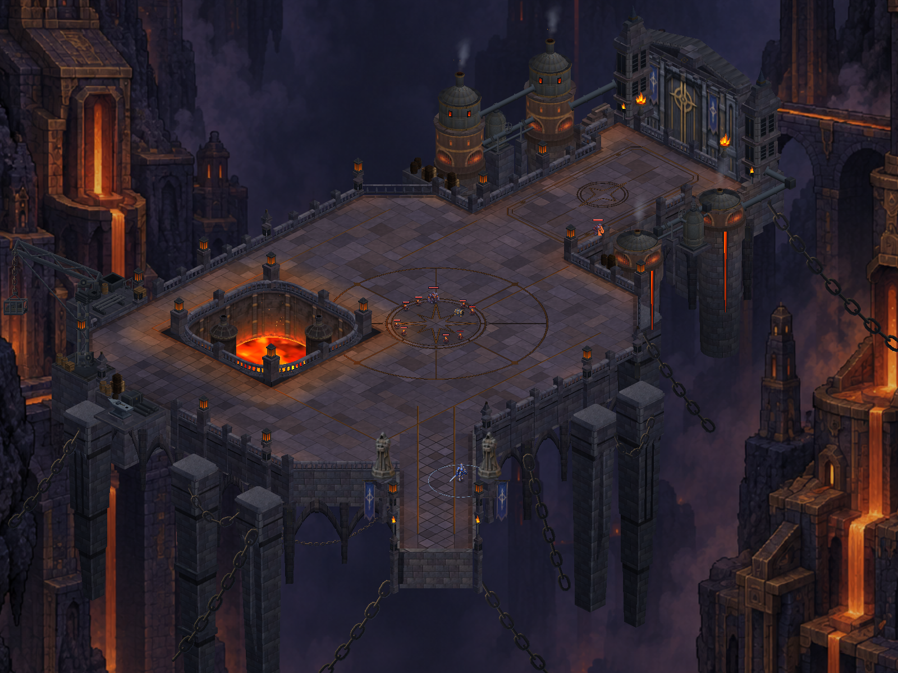
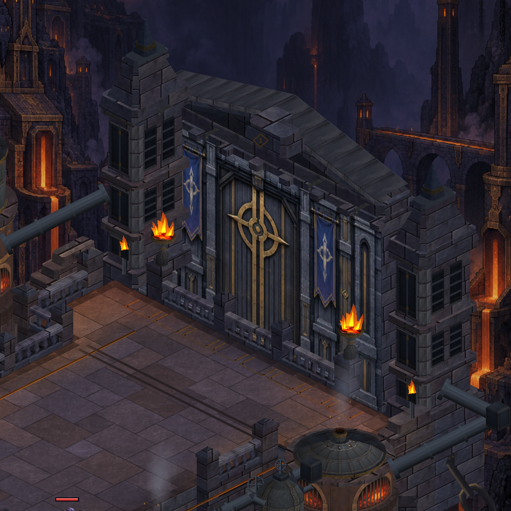
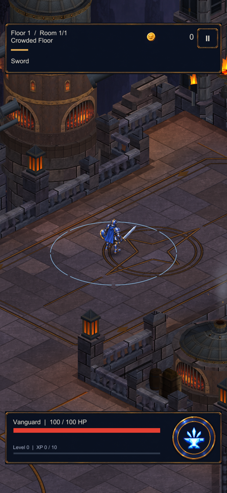
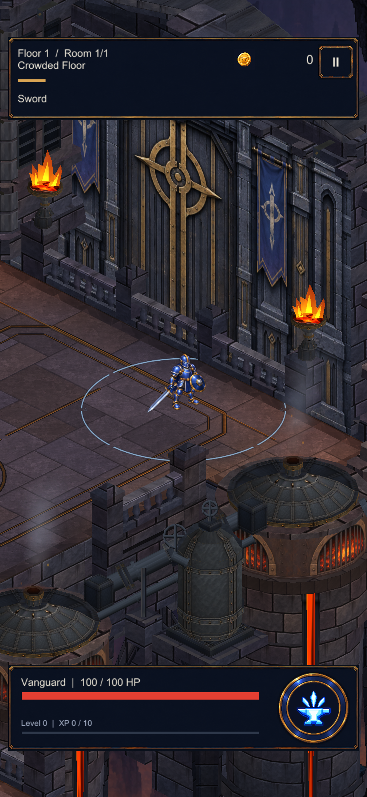
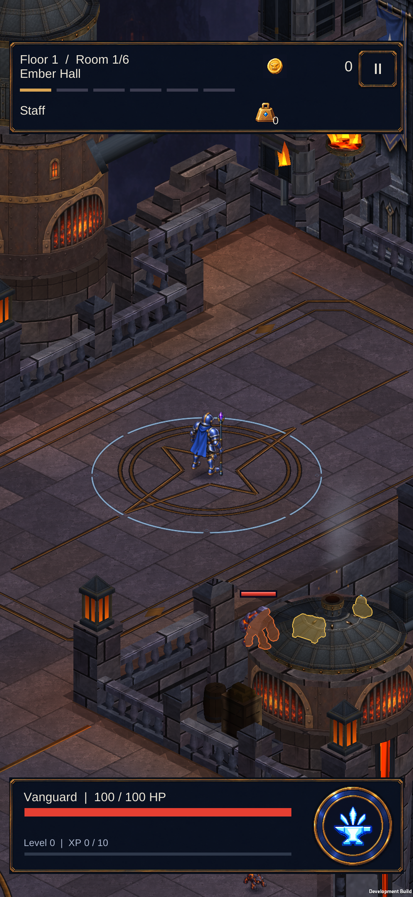
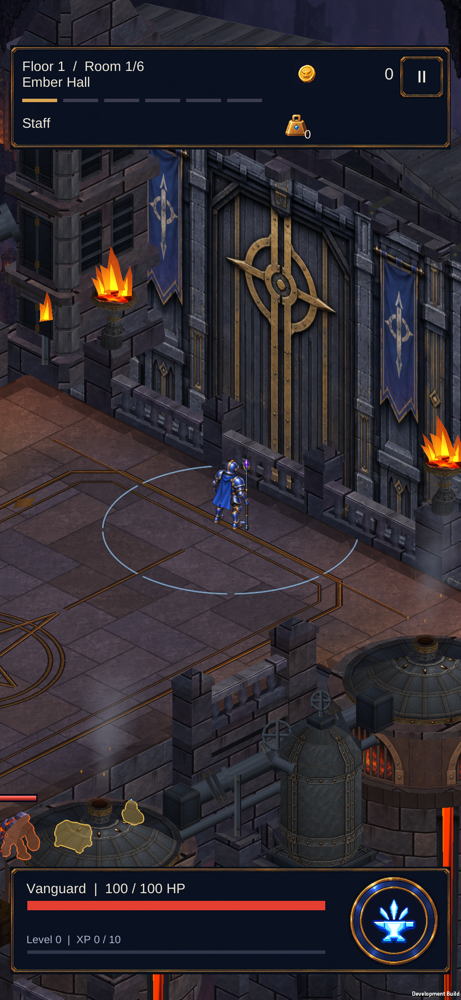

CRYPTFORGE · 08 OCTOBER 2026 · ACTUAL GAME GEOMETRY
A deliberate approach to the gate
A broad, flush stone-and-brass panel now leads from the court into the gate landing. Its smaller four-point medallion follows the approach direction. Five dressed threshold stones finish the route at the doors. This is environmental artwork, not an interactive exit or a height change.

After — actual Unity overview, unchanged camera.
Gate detail

Before — generic apron guides and repeated small threshold brackets. After — framed approach and crosswise threshold stones.
After — framed approach and crosswise threshold stones.At the gameplay camera

Approach — matte brass remains distinct from the cyan ability ring.
Landing — existing walkable lane and follow camera preserved.Installed on S23
The installed APK hash matches the tested build. Guarded walking reached the medallion and threshold. Normal Staff combat was checked afterward; profile and original development settings remained unchanged.

Actual device — matte brass and cyan ability ring.
Actual device — dressed stones at the doors.Region: 18 renderers, 94,727 vertices (+1,776, about 1.9%). Existing materials and static batches; no new textures or animation. Actual walkable gate elevation remains open and needs consistent actor, shadow, effect and camera projection.
Implementation and verification · Mesh budget · Approved concept reference